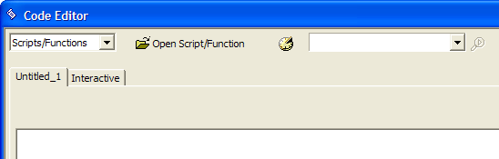
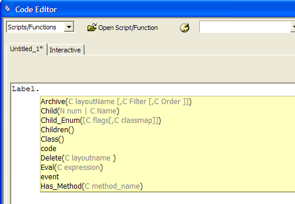
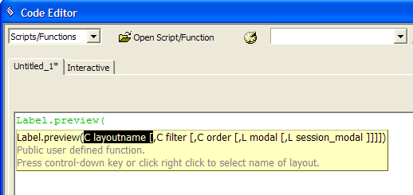
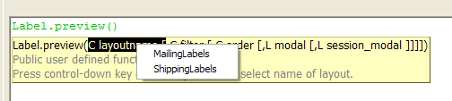
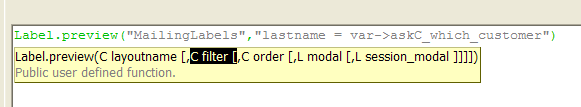
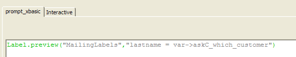
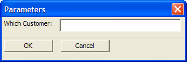

Using Ask Variables
In this example, you will create an Xbasic script that prompts the user for the name of the customer, and then prints the corresponding mailing label. This lesson uses Xbasic scripting (not Action Scripting) and is intended for users with some experience with Xbasic.
On the Code tab click the New > Script (using Xbasic editor). Alpha Five opens a new, untitled script.

An Xbasic method to preview a mailing label is LABEL.PREVIEW()(now replaced by PREVIEW_LABEL()). Type "Label.". Note that as you type, Alpha Five's bubble-help shows you the available functions and methods. After you type the period, Alpha Five shows you the methods for the "label" object.

Type "label.preview(". The screen should look like this:

Alpha Five's bubble-help now shows you the syntax for the LABEL.PREVIEW() function. The first argument is the name of the label you want to preview. If you remember the name of the label, then type it in. But it's much easier to let Alpha Five provide a list of label layouts. Right-click the parameter name (i.e. layoutname).

Alpha Five shows the mailing labels in the current database. Enter the filter expression: lastname = var->askC_which_customer. Your screen should now look like this:

The var-> prefix tells Alpha Five that what comes next is a variable. The ask portion in the variable name tells Alpha Five that it should prompt for the variable value at run-time. The C portion in the ask prefix tells Alpha Five that the variable it will prompt for is a character variable. The portion after the askC_ prefix is the actual prompt that Alpha Five will display at runtime. Click the Save button to save your script, and name it "prompt_xbasic".
Click OK. Your completed script should look like this:

Now test the script. Click the Run button on the toolbar.
The dialog appears prompting for the customer's name. Note that you do not have a pick-list of available customer names to choose from. as you can see, one of the key benefits of using the Action Script approach, rather than the one line Xbasic approach is the ability to customize the prompt on the dialog box.
